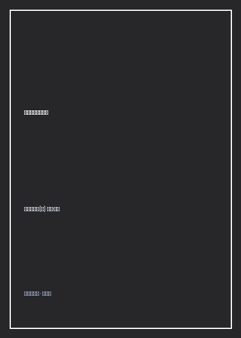

《约翰·克利斯朵夫》

总体观点
《约翰·克利斯朵夫》（Jean-Christophe）是法国著名文学大师罗曼·罗兰荣获1915年诺贝尔文学奖的巅峰巨著，也是世界文学史上“大河小说（Roman-fleuve）”体裁无可争议的最高丰碑。翻译巨匠傅雷先生在著名的重译本序言中写下了激荡数代中国读者的金句：“真正的英雄决不是永没有卑下的情操，只是永不被卑下的情操所屈服罢了……唯有真实的苦难，才能驱除浪漫底克的幻想；唯有看到克服苦难的壮烈的悲剧，才能帮助我们担受残酷的命运。”
全书以乐圣贝多芬的精神生平为原型，生动描绘了生于莱茵河畔德国音乐世家的天才约翰·克利斯朵夫充满苦难与战斗的一生。小说由四卷十章构成，宛如一部宏大壮丽的四乐章交响乐：从第一卷“黎明”展现克利斯朵夫在贫寒暴戾家庭中的音乐觉醒、童年丧父挑起家庭重担；到第二卷“反叛”向德国平庸僵化、虚伪自满的宫廷音乐体制公然开战，因卷入抗暴冲突被迫逃亡法国；再到第三卷在繁杂混乱的巴黎邂逅法国诗人奥利维，德法两国两个最纯洁的灵魂结下生死莫逆之交，展现了超越民族狭隘的欧洲精神大同。
在全书的高潮乐章中，奥利维在五一劳动节流血冲突中惨死，克利斯朵夫流亡瑞士，经历情欲与良心的“燃烧的荆棘”炼狱，最终超越了早年的狂暴与仇恨，心智走向大慈大悲的大彻大悟。小说在著名的结尾中写道：圣者克利斯朵夫背负着重如泰山的神秘小男孩跋涉渡过汹涌的黑夜大河，当终于踏上对岸破晓的晨曦时，孩子告诉他：“我是即将到来的日子！”全书以磅礴的生命力证明：生命的唯一意义就是战斗与爱，唯有经过苦难烈火焚烧的灵魂，才能在艺术与人性的涅槃中迎来永恒的新生。
核心观点
-
1. 罗曼·罗兰的英雄主义哲学：认清生活的真相后依然热爱生活
真正的英雄绝非无坚不摧的超人神话，而是那些肉体充满脆弱、经历过最深的绝望与堕落，却依然紧咬牙关拒绝向平庸与丑恶妥协的顽强搏击者。
“英雄是一种做出来的精神，而不是一种生出来的肉体。”克利斯朵夫在面临穷困潦倒、作品无人问津被整个乐坛围攻谩骂时，依然在阁楼中放声大笑奋笔谱曲。 -
2. 艺术的唯一灵魂是真诚：彻底斩断迎合庸众与权贵的虚伪媚俗
艺术绝非粉饰太平的甜腻点心，而是灵魂痛苦呼喊的真实喷涌。任何迎合流行趣味、丧失真情实感的艺术创作，在本质上都是对造物主的背叛与亵渎。
克利斯朵夫在德国大公的宫廷音乐会上，当众拒绝弹奏自己认为虚伪造作的宫廷附庸乐曲，痛斥公爵聘请的乐评家是“兜售谎言的下贱吹鼓手”，彻底自绝于体制。 -
3. 奥利维与德法灵魂的交融：跨越民族偏见的深层人类友谊
日耳曼人的雄浑刚劲、行动意志与法兰西人的细腻优雅、怀疑理性，在克利斯朵夫与奥利维的生死知己深情中完美互补，超越了狂热民族主义的狭隘藩篱。
在巴黎破旧公寓里两人并肩而坐，奥利维以法兰西文人的敏锐哲学帮克利斯朵夫剔除盲目的狂热，克利斯朵夫则用坚不可摧的生命意志为孱弱的奥利维撑起晴空。 -
4. 燃烧的荆棘与肉体欲望的炼狱：圣者在罪恶感中的深层救赎
人性的复杂在于崇高与卑劣的同体共生。在瑞士隐居时与亡友遗孀阿娜陷入疯狂通奸偷情的深渊，让狂妄自负的克利斯朵夫真正体认到凡人肉身的软弱与无助。
在偷情后的狂暴绝望中，克利斯朵夫在暴风雨雪山绝顶几欲跳崖自尽，在生与死的撕裂煎熬中彻底粉碎了精神洁癖，学会了对尘世一切罪人怀抱深沉的怜悯。 -
5. 背负明日婴儿渡河的圣徒终曲：生命在大河波涛中汇入永恒新旦
死亡绝非生命的终结，而是成熟麦子归仓的安宁喜悦。老年的克利斯朵夫安详阖目，深知自己一生所播撒的艺术火种已在下一代年轻人的胸膛中熊熊燃起。
“我是即将到来的日子！”在圣人克利斯朵夫即将脱力溺水的最后一步，黎明第一缕阳光穿透黑夜照亮河对岸，金色钟声敲响，整部大河小说在浩瀚晨曦中圆满礼成。
全书思维导图 · 知识脉络树
全书结构
-
第一卷 黎明、清晨与青年（莱茵河畔的音乐神童与苦难觉醒）
描绘克利斯朵夫在德国莱茵河畔小城降生、酗酒祖父与父亲的粗暴压迫、外祖父高脱弗烈特的民间启蒙、初恋幻灭与家庭重担的扛起。
少年克利斯朵夫在莱茵河边倾听大河咆哮，在舅舅高脱弗烈特指引下领悟到“真正的音乐是大自然的呼吸，心底有声音时才配歌唱”。 -
第二卷 叛乱与节场（向伪善体制宣战与流亡巴黎）
青年克利斯朵夫在德国小城掀起反抗庸俗传统的音乐风暴，发表激进文章得罪权贵，因在乡村酒馆挺身解救被士兵侮辱的农女杀伤军官被迫越境逃亡。
在巴黎火车站走下车厢，举目无亲囊空如洗，漫步在熙熙攘攘却冷酷无情的塞纳河畔，直面法兰西文化市场充斥的铜臭、朋党与虚荣浮华。 -
第三卷 安多纳德、户内与朋友（与奥利维的知己相守）
在绝望贫困中结识弱不禁风的年轻诗人奥利维（其已故姐姐安多纳德曾暗中暗恋克利斯朵夫），两人在阁楼结为生死知己，在纯粹精神世界中共创艺术高峰。
两人在蒙马特高地狭窄阁楼合租，分吃一块硬面包，夜晚一人弹琴一人写诗，贫寒至极却在精神上富甲天下，成为全书最纯洁温情的章节。 -
第四卷 燃烧的荆棘、新旦与圣约翰渡河终曲
巴黎五一街头暴动奥利维惨遭军警刺死，克利斯朵夫逃亡瑞士陷入与阿娜的伦理深渊；历经灵魂洗礼后重返罗马安享晚年，在圣徒渡河幻景中安详逝世。
“一个大汉背着一个孩子在黑夜的激流中涉渡……‘孩子，你多重啊！你究竟是谁？’孩子回答：‘我是即将到来的日子！’朝霞满天，大钟齐鸣。”